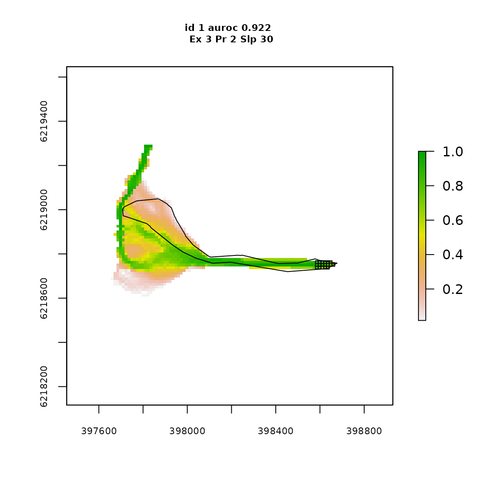
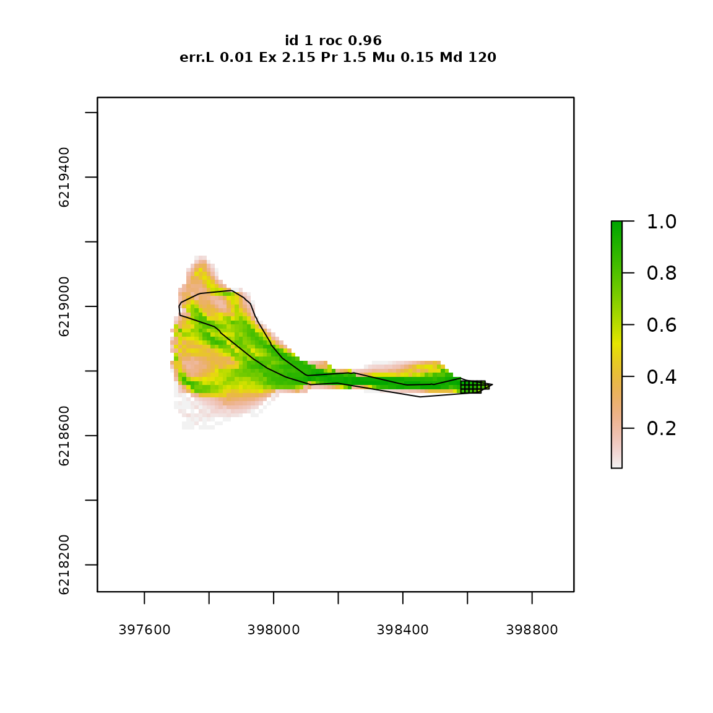
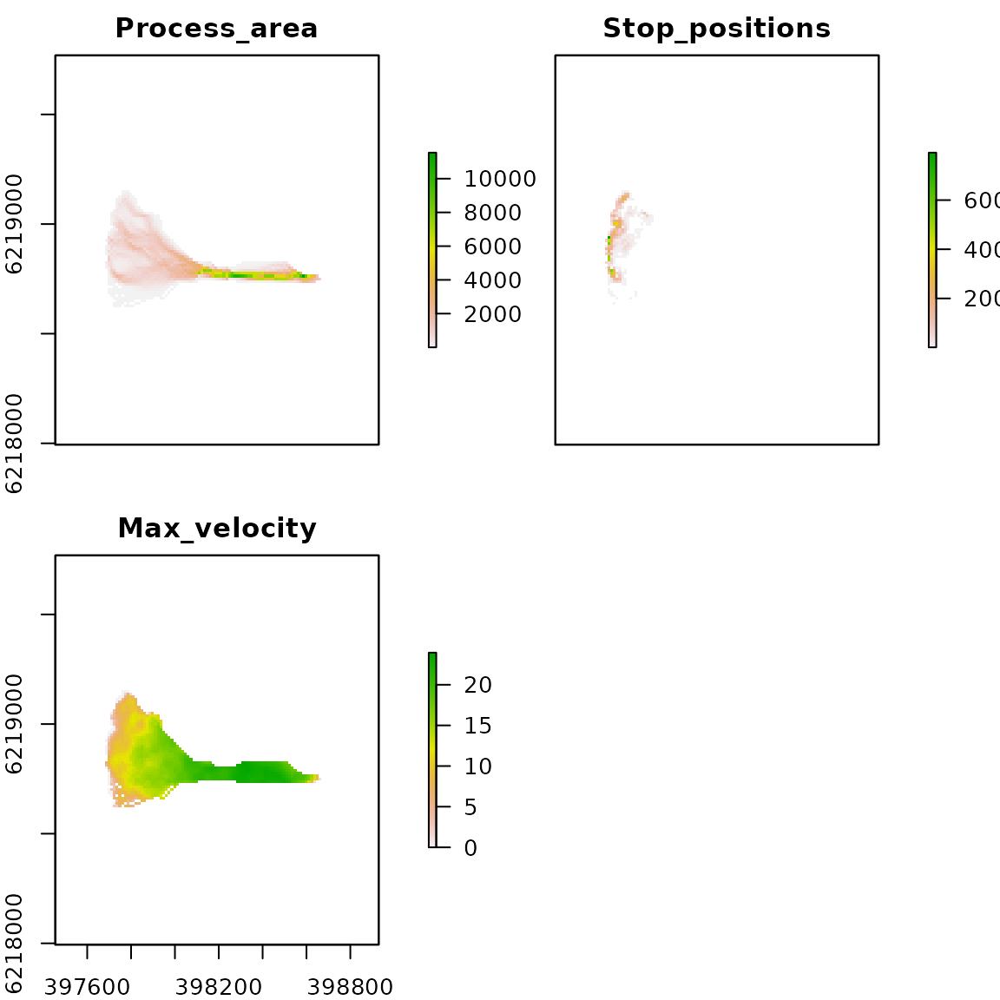

Optimizing for a an individual runout event
Jason Goetz
2020-11-26
gpp_rw_pcm_single_optimization.RmdThe runoptGPP package was developed for automatic parameter selection for single event and regional runout modeling using the random walk and PCM components of the Gravitational Process Path (GPP) Model tool in SAGA-GIS. The optimization procedure uses a two-stage approach, where we first optimize the random walk model to find the ‘best’ simulation of runout path, and then plug-in these values to the PCM model to optimize for runout distance. The performance of the runout path is based on the area under the receiver operating characteristic curve (AUROC), and runout distance is based on a measure of relative error.
This vignette provides an example of applying the runoptGPP package for selecting optimal parameter sets for a single debris flow event. It also,
- Shows how to measure and visualize GPP runout model performance in R
- Shows how to setup and run grid search optimization
Load packages and data
To start, we will load all the necessary packages and data. The runoptGPP functions are made to work with RasterLayer, SpatialPointsDataFrame and SpatialPolygonsDataFrame objects from the raster and sp packages.
We are using an 12.5 m spatial resolution DEM. The debris-flow runout track and source point that we will use for runout model optimization are one of many stored in shapefile. So, we select a single runout track, and the corresponding source point for this example.
library(runoptGPP) library(raster) library(rgdal) library(sp) library(Rsagacmd) # Load digital elevation model (DEM) dem <- raster("elev_alos_12_5m.tif") # Load runout source points source_points <- readOGR(".", "debris_flow_source_points")
#> OGR data source with driver: ESRI Shapefile
#> Source: "/home/jason/Data/Chile", layer: "debris_flow_source_points"
#> with 541 features
#> It has 17 fields# Load runout track polygons and assign object ID based on row number runout_polygons <- readOGR(".", "debris_flow_polys_sample")
#> OGR data source with driver: ESRI Shapefile
#> Source: "/home/jason/Data/Chile", layer: "debris_flow_polys_sample"
#> with 100 features
#> It has 9 fieldsrunout_polygons$objectid <- 1:length(runout_polygons) # Select a debris flow and source point for this example runout_polygon <- runout_polygons[77,] sel_source_point <- over(source_points, runout_polygon) source_point <- source_points[!is.na(sel_source_point$objectid),] plot(runout_polygon) plot(source_point, add = TRUE)

Initiate a SAGA-GIS geoprocessor object
The runout simulation is computed in SAGA-GIS. To do this, we are coupling R with SAGA-GIS using the Rsagacmd package. Each time we load this package we need to initiate a SAGA-GIS geoprocessor object, which generates functions in R to SAGA-GIS libraries and tools. We only need to load the Geomorphology library (i.e., sim_geomorphology) to access the GPP tool. This is also faster than loading all of the SAGA-GIS libraries (e.g., saga_gis())
saga <- saga_gis(opt_lib = "sim_geomorphology")
GPP random walk simulation (runout path)
We simulate the runout path using a random walk. The rwPerformance function does this for us, as well as computing its performance by computing the AUROC based on a comparison of the simulated and observed (mapped) runout paths.
In our example, only a single point was mapped representing the source point. To obtain a source area, we simply apply a buffer around the source point that is clipped at the runout polygon boundaries.
Note: The source of the runout (‘slide_src’) can be a single point, a buffered point or a polygon representing a mapped source area.
rwPerformance(dem, slide_plys = runout_polygon, slide_src = source_point, slp = 30, ex = 3, per = 2, gpp_iter = 1000, buffer_ext = 500, buffer_source = 50, plot_eval = TRUE, saga_lib = saga)

#> [1] 0.9222383GPP random walk grid search optimization
To test the random walk model under a variety of parameter sets, we need to first define our grid search space. To do this we create vectors for each of the random walk model parameters that include the parameter values we want test.
steps <- 3 # Exponent controlling lateral spread rwexp_vec <- seq(1.3, 3, len=steps) # Persistence factor to weight flow direction consistency rwper_vec <- seq(1.5, 2, len=steps) # Slope threshold - below lateral spreading is modeled. rwslp_vec <- seq(20, 40, len=steps)
We can compute performances values (i.e. AUROC) across our grid search space.
rw_gridsearch <- rwGridsearch(dem, slide_plys = runout_polygon, slide_src = source_point, #Input random walk grid search space slp_v = rwslp_vec, ex_v = rwexp_vec, per_v = rwper_vec, #Set number of simulation iterations gpp_iter = 1000, #Define processing extent size (m) buffer_ext = 500, #(Optional) Define size of buffer to make source area from point buffer_source = 50, saga_lib = saga) rw_gridsearch
#> , , 1.5
#>
#> 1.3 2.15 3
#> 20 0.5849514 0.6100532 0.6086350
#> 30 0.6029488 0.8623006 0.9221621
#> 40 0.7955612 0.9471920 0.9516323
#>
#> , , 1.75
#>
#> 1.3 2.15 3
#> 20 0.5849405 0.6099749 0.6098690
#> 30 0.6004440 0.8692605 0.9207820
#> 40 0.7986865 0.9477010 0.9518075
#>
#> , , 2
#>
#> 1.3 2.15 3
#> 20 0.5849463 0.6098564 0.6084895
#> 30 0.6002988 0.8706148 0.9222150
#> 40 0.7982255 0.9474357 0.9512889And find the parameter set that resulted in the highest AUROC score.
rw_opt_single <- rwGetOpt_single(rw_gridsearch) rw_opt_single
#> rw_slp_opt rw_exp_opt rw_per_opt rw_auroc
#> 1 40 3 1.75 0.9518075GPP PCM model simulation (runout distance)
Now that we have obtained an optimal parameter set for the runout walk model, we can plug-in these values to the PCM model that controls runout distance.
pcm <- pcmPerformance(dem, slide_plys = runout_polygon, slide_src = source_point, rw_slp = 40, rw_ex = 3, rw_per = 1.5, pcm_mu = 0.15, pcm_md = 120, gpp_iter = 1000, buffer_ext = 500, buffer_source = 50, plot_eval = TRUE, return_features = TRUE, saga_lib = saga)

# Runout distance relative error pcm$length.relerr
#> [1] 0.00686124# Plot GPP PCM runout modelling ouputs gpp_output <- stack(pcm$gpp.parea, pcm$gpp.stop, pcm$gpp.maxvel) names(gpp_output) <- c("Process_area", "Stop_positions", "Max_velocity") plot(gpp_output)

GPP PCM grid search optimization
Similar to the random walk optimization, we set up vectors to create our grid search space, measure the runout distance model performance (e.g. using relative error), and then find the parameter set with the best performance.
# The mass-to-drag ratio (m) pcmmd_vec <- seq(20, 120, by=20) # The sliding friction coefficient pcmmu_vec <- seq(0.05, 0.3, by=0.1) pcm_gridsearch <- pcmGridsearch(dem, slide_plys = runout_polygon, slide_src = source_point, #Plug-in random walk optimal parameters rw_slp = rw_opt_single$rw_slp_opt, rw_ex = rw_opt_single$rw_exp_opt, rw_per = rw_opt_single$rw_per_opt, #Input PCM grid search space pcm_mu_v = pcmmu_vec, pcm_md_v = pcmmd_vec, #Set number of simulation iterations gpp_iter = 1000, #Define processing extent size (m) buffer_ext = 500, #(Optional) Define size of buffer to make source area from point buffer_source = 50, saga_lib = saga) # Get optimal parameters pcmGetOpt_single(pcm_gridsearch)
#> pcm_mu pcm_md relerr auroc
#> 1 0.15 100 0.01096616 0.9598082